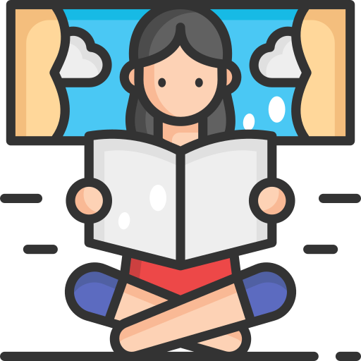

 La importancia de la lectura en el desarollo de las personas
09/11/21
El efecto de la lectura en el cerebro humano y su capcidad de mejorar a una sociedad
La lectura, como ya sabemos tienen la capacidad de ampliar nuestros conocimientos de una manera abismal, sin embargo, considero que es importante hacer conscientes a las personas sobre el efecto que puede tener la lectura no solo en las personas como individuos si no que en todos como sociedad. El propósito de este blog es educar a la gente sobre los beneficios de la lectura no solo a un nivel personal, es decir los efectos de esta actividad en nuestra mente y en la manera que aprendemos, sino que tambíen concientizar a todos sobre la gran diferencia que observaríamos si todos comenzáramos a adoptar este gran hábito.

 Libros que toda persona debería leer por lo menos una vez en su vida:
Libros que toda persona debería leer por lo menos una vez en su vida:

 La
importancia de la Lectura:
La
importancia de la Lectura: